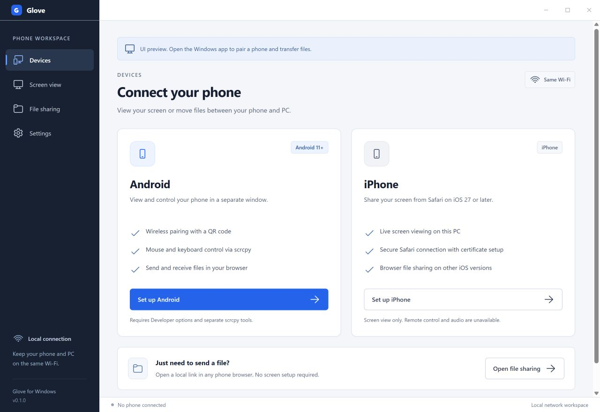

Mirror and control Android
Pair through Wireless debugging. Glove opens the connected phone in a scrcpy window where you can use your Windows keyboard and mouse.
Pair Android over Wi-FiGlove for Windows
Mirror and control an Android phone, send files in both directions, or try the iPhone screen viewing preview. Connect over your local network.
Open source under MIT · Windows x64 development preview

Android 11 or newerWireless debugging and scrcpy
iPhone previewScreen viewing in Safari on iOS 27 or newer
Android developer toolsLocal MCP for screenshots and UI checks
Each task has its own connection flow in Glove.
Pair through Wireless debugging. Glove opens the connected phone in a scrcpy window where you can use your Windows keyboard and mouse.
Pair Android over Wi-FiStart a viewing session from Glove and approve sharing in Safari. The preview requires iOS 27 or newer and a verified local certificate.
Read the iPhone setupOpen a temporary link on your phone and choose what to send. Use the desktop picker to share files from Windows. Works through a phone browser.
Start a file sharing sessionFor Android developers
Glove’s local MCP server lets Codex, Claude Code, VS Code, and other stdio MCP clients inspect an authorized Android device.
Check that the phone runs Android 11 or newer and offers Wireless debugging in Developer options. Firmware and device management can affect pairing and input. See Android requirements and model families.
Glove’s Android wireless setup pairs over a shared Wi-Fi network. If your network blocks discovery, use the manual pairing and connection fields in Glove. See the connection steps.
Glove hosts a temporary HTTP page on the PC. The session link grants access to the files you share. Use private Wi-Fi and stop sharing when you finish. See file sharing details.
The development preview is available from source. Follow the Windows build guide and check the repository for the current test status. Build Glove on Windows.